People
People
Postdoctoral fellows, graduate students and undergraduate researchers, and the alumni now working across universities, government and industry.

Principal investigator
Reza Najafi, PhD, P.Eng.
Professor, Civil and Environmental Engineering, Western University. Cofounder and co-director, Centre for Multihazard Risk and Resilience. Associate Editor, Water Resources Research and Weather and Climate Extremes.
Reza's research spans hydroclimatic extremes, compound events, detection and attribution and infrastructure risk. Before Western he was a research scientist at the Pacific Climate Impacts Consortium.
Postdoctoral associates
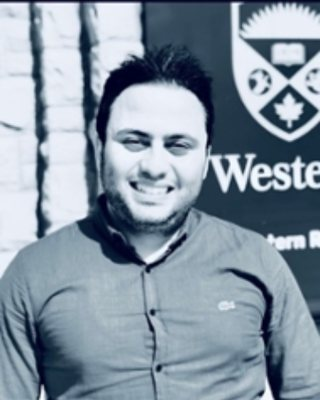
Postdoctoral associateIssam MohamedClimate-adjusted IDF curves for resilient design; radar analysis of compound hail, wind and rain
LinkedInPhysical coastal processes: waves, surge, nearshore hydrodynamics and erosion
LinkedInDoctoral students
Probabilistic urban flood risk; compound river, rainfall and coastal flooding in Parksville, BC
LinkedIn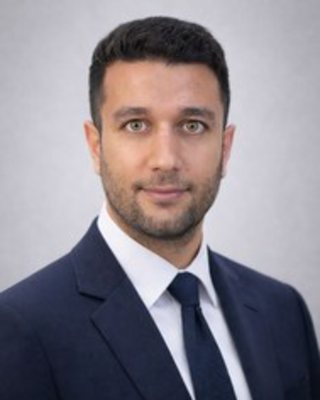
PhD studentMehrdad JafarzadehLake Ontario water levels with TELEMAC-2D; compound coastal flooding in Tofino. Co-supervised with A. Straatman
LinkedIn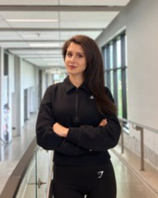
PhD studentYasaman MasaeliWind-driven rain and compound hail, wind and rain extremes. Co-supervised with A. Cannon, ECCC
LinkedInCompound coastal flooding in the Saint John River basin, coupling Raven to SFINCS
LinkedInAtmospheric drivers of Pacific surge and wave extremes across datasets
LinkedInUndergraduate and visiting
Undergraduate and visiting
- Jonathan Li Undergraduate researcher; FloodFarmGPT, a language model assistant for farm flood questions with traceable sources
- Junxuan Li Visiting student, South China University of Technology
Alumni
Where our people went
Former members now work in universities, federal science, consulting and industry.
Assistant Professor, Dong-A University, Korea
Banting Postdoctoral Fellow, University of Waterloo
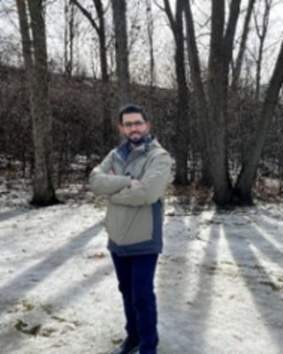
Postdoc 2025Mohammad FereshtehpourClimate Change Analyst, Natural Resources Canada; Adjunct Professor, York University
Postdoctoral Researcher, National Research Council Canada
Senior Facility Project Engineer, PowerCo. Cascading infrastructure risk
Remote Sensing Scientist, A.U.G. Signals
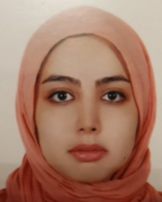
PhD 2024Melika RahimiMovagharContinuing research collaboration with the lab
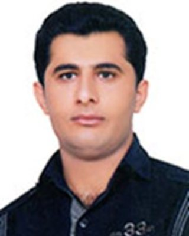
PhD 2022Farshad Jalili PiraniPostdoctoral Research Associate, McMaster University
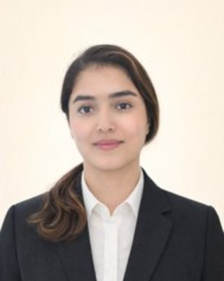
MESc 2026Yasaman TaleghaniCoastal Engineering Specialist, Dillon Consulting
Water Resources EIT, Delta Science and Engineering
Water Resources EIT, Ebbwater Consulting, Vancouver
Intermediate Project Designer, S. Llewellyn and Associates
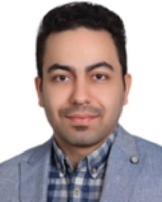
MESc 2022Omid MarandiContract Administrator, R.V. Anderson Associates
Intermediate Water Resources Engineer, DSEL
Uncertainty in riverine and coastal flood impacts
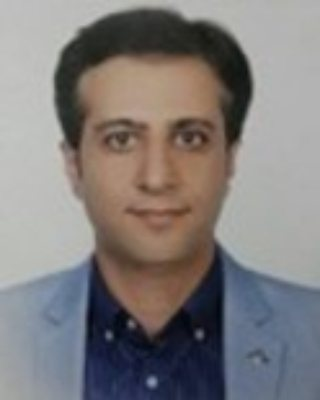
MESc 2020Saber MoazamiAssociate Water Resources Engineer, Stantec, San Francisco
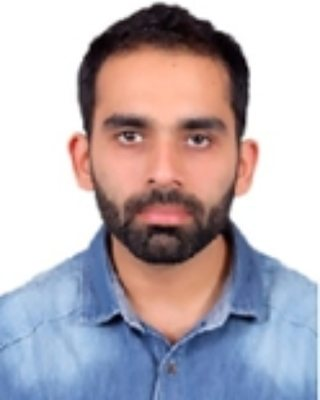
MESc 2019Harsimrenjit SinghData science
Water Resources Engineer, Stantec. Saint Lucia compound flooding
Water resources engineering
Visiting researchers
Vegetation response to hydrological drought
Now faculty at CUJAE, Havana; earth-fill dam stability
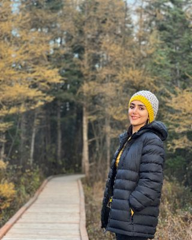
Visiting PhD studentMarzieh KhajehaliIsfahan University of Technology; copula-based flood frequency
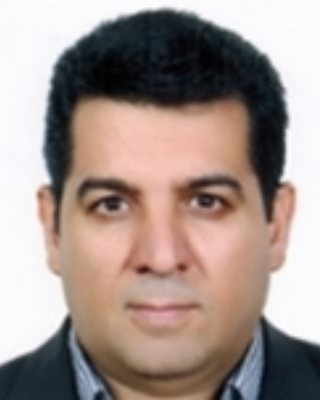
Visiting professorMahdi ErfanianUrmia University; precipitation extremes and teleconnections
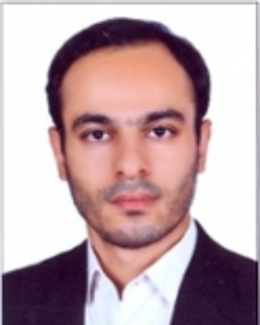
Visiting PhD studentSadegh AbbasianSharif University of Technology; drought risk and downscaling
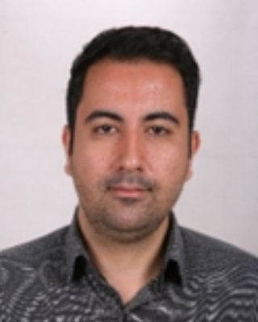
Visiting PhD studentHossein MerrikhpourK. N. Toosi University of Technology; satellite-based probable maximum precipitation
More graduate and postdoctoral alumni
- Afshin Shaygani Postdoc 2026; machine learning for compound coastal flood assessment
- Yuxuan Wang MESc 2025; now a PhD student at McGill University
MEng graduates
- Jiajin Feng MEng 2025, now a PhD student in the lab
- Ahmad Al Maharmeh MEng 2024
- Kai-Nat Shahzad MEng 2023
- Ramtin Monadi MEng 2022
- Ahmad Al Hourani MEng 2022
- Rawan Safieddine MEng 2021
- Agamdeep Singh Kang MEng 2020
- Da Zhang MEng 2020
- Aishwarya Shinde MEng 2020
- Keyur Prajapati MEng 2020
- Munirat Idris MEng 2019
- Apurva Patel MEng 2019
- Ankita Hazarika MEng 2018
- Karlo Boninac MEng 2017
Undergraduate researchers and interns
- Bianca Milione Undergraduate thesis 2025
- Benjamin MacDonald Undergraduate thesis 2025
- Eleftheria Maniaka Undergraduate thesis 2025
- Drew Lewis Undergraduate thesis 2025
- Louisa Fritzsche NSERC USRA 2023
- Juan Pablo Cardona Ocampo Mitacs Globalink 2023
- Aditya Aggarwal Mitacs Globalink 2023
- Shivendra Kumar Gupta Mitacs Globalink 2023
- Johny Samuael Mitacs 2022
- Maaz Abdullah Mitacs 2022
- Pooja S Mitacs 2021
- Ravindranath Yadav Mitacs 2021
- Fisal Faroukh NSERC USRA 2021; Western USRI 2020
- Maryam Ghalambor Dezfouli Western USRI 2021
- Husein Mokbel Western USRI 2021
- Yifan Li Undergraduate thesis 2021
- Antonina Struminski-Bodden NSERC USRA 2019
- Aashish Saxena Mitacs 2019
- Karan Chaudhary Mitacs 2018
Other visiting scholars and students
- Marina Batalini de Macedo Visiting professor 2026
- Reza Javidi Sabbaghian Visiting professor 2026
- Luis Fermín Córdova Visiting professor 2025, CUJAE
- Ginet Maria Guerrero Porras Visiting student 2025
- Kevin Cruz Batista Visiting student 2025
- Bryan Pérez León Visiting student 2025
- Alejandro Miguel Guerra González Visiting student 2025
- Andres Carvajal Elena Visiting student 2025
- Hasan Pourfallah Visiting student 2018
Lab life
Seminars, workshops, lunches and the odd bowling night
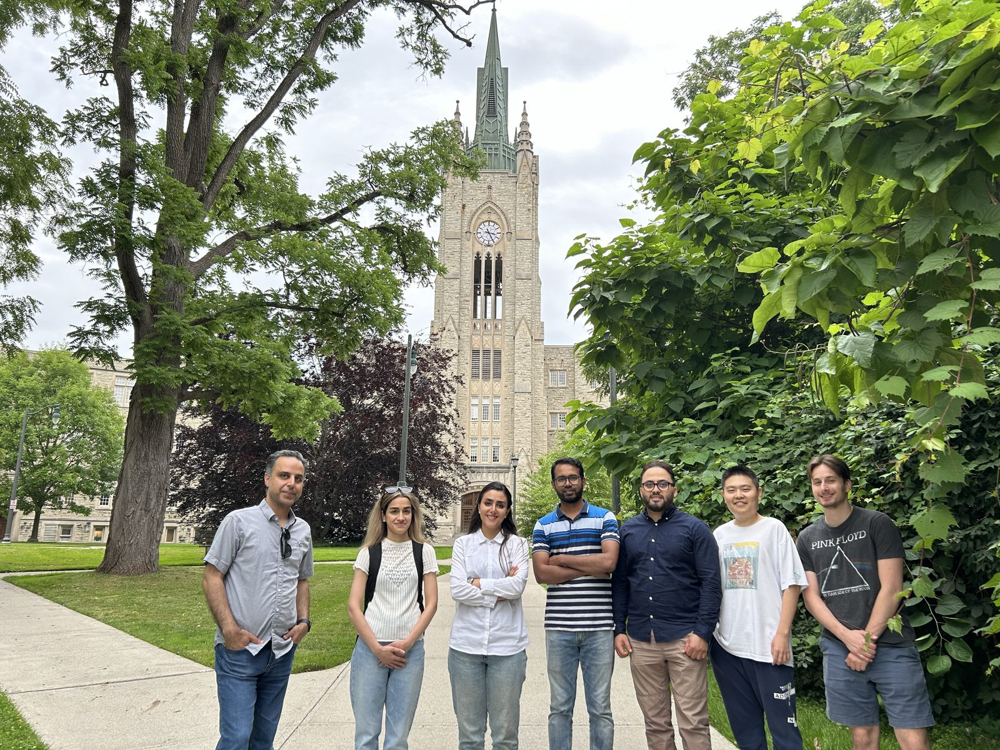
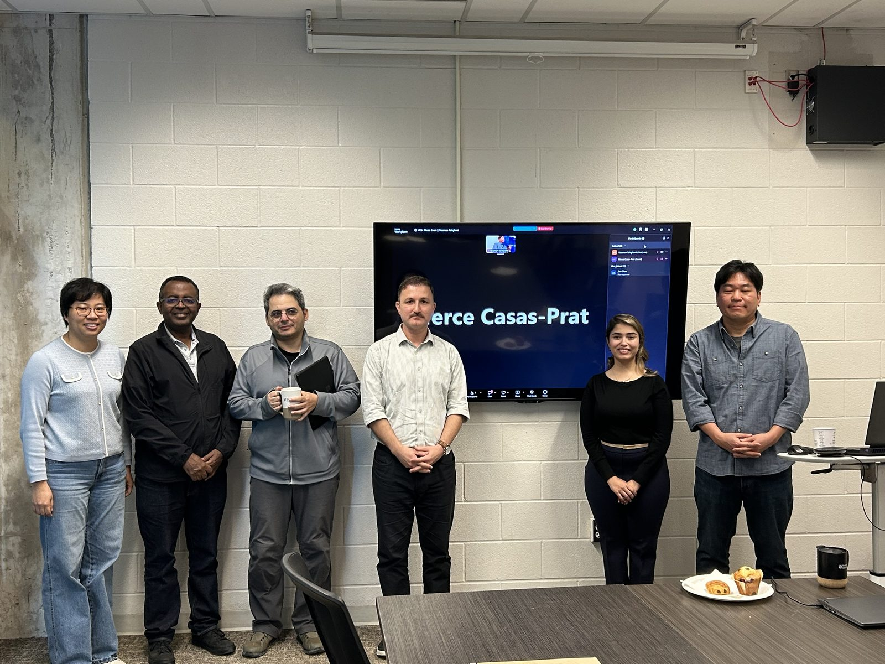
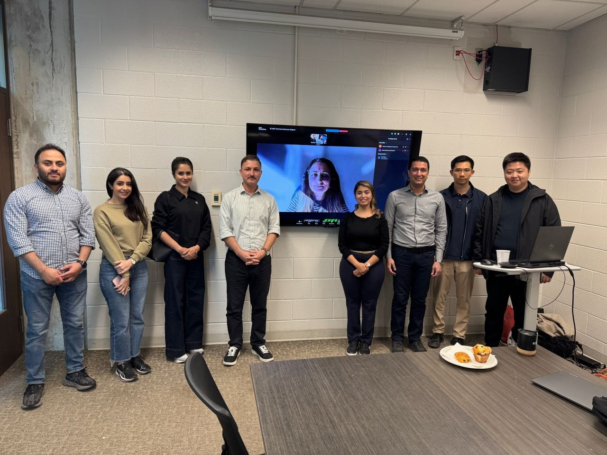
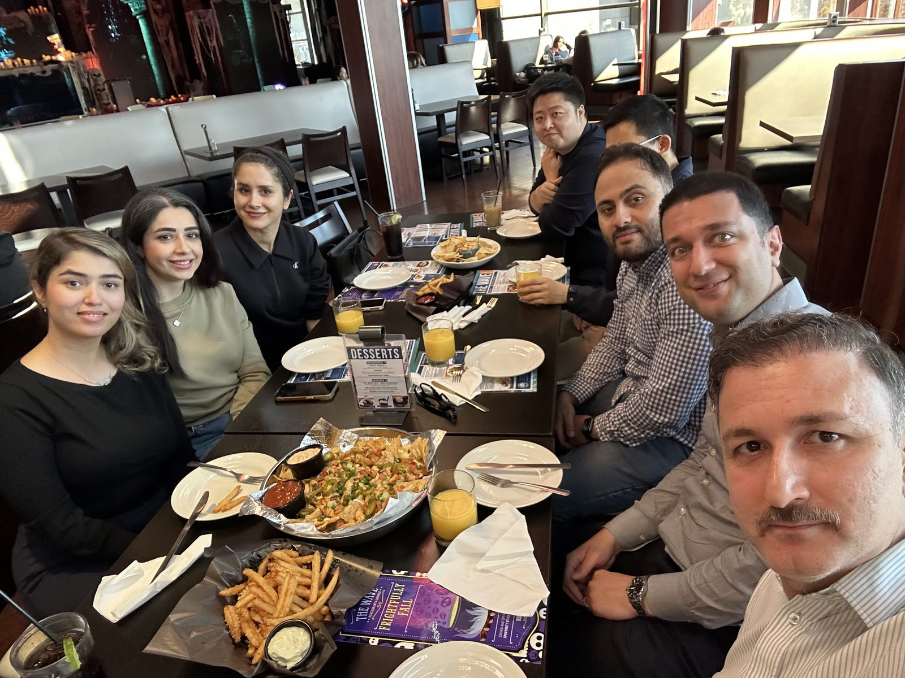
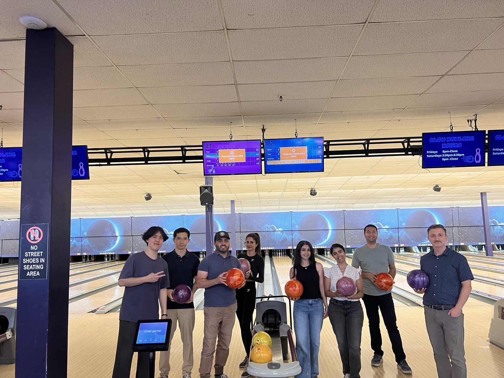
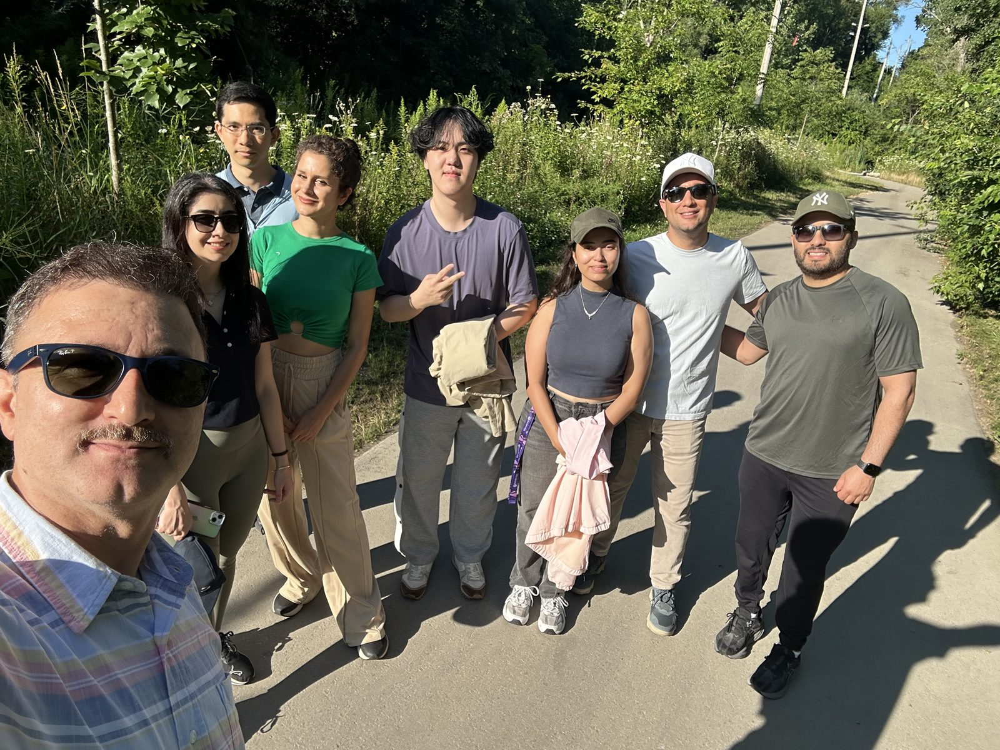
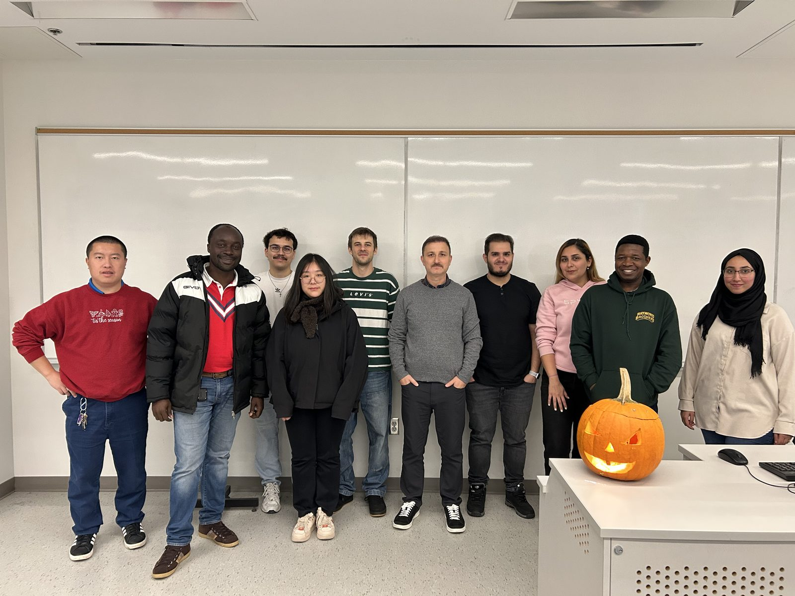
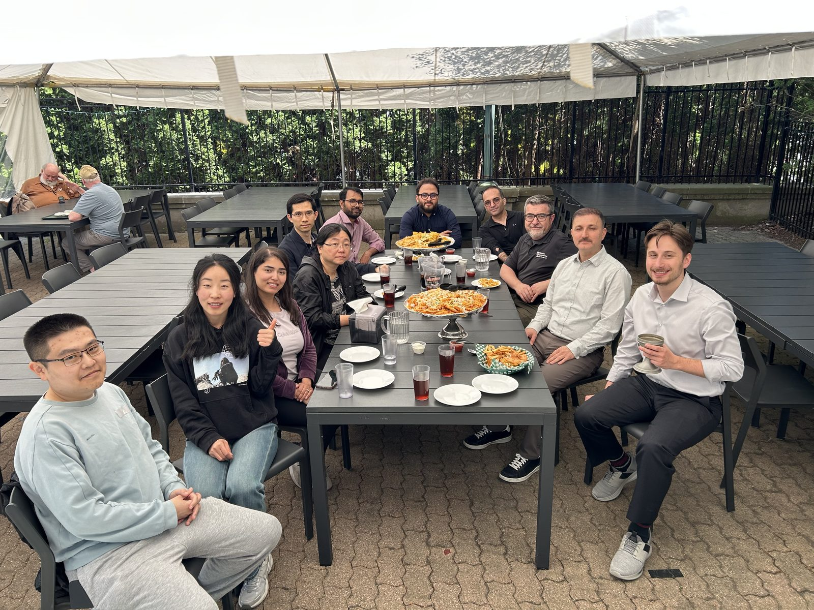
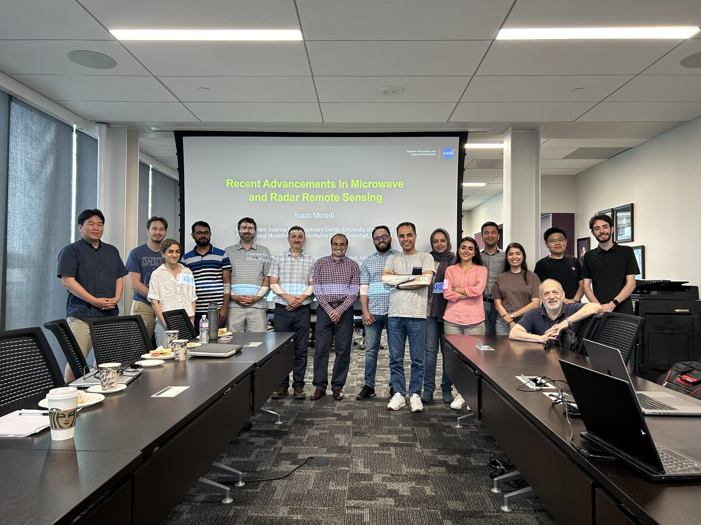
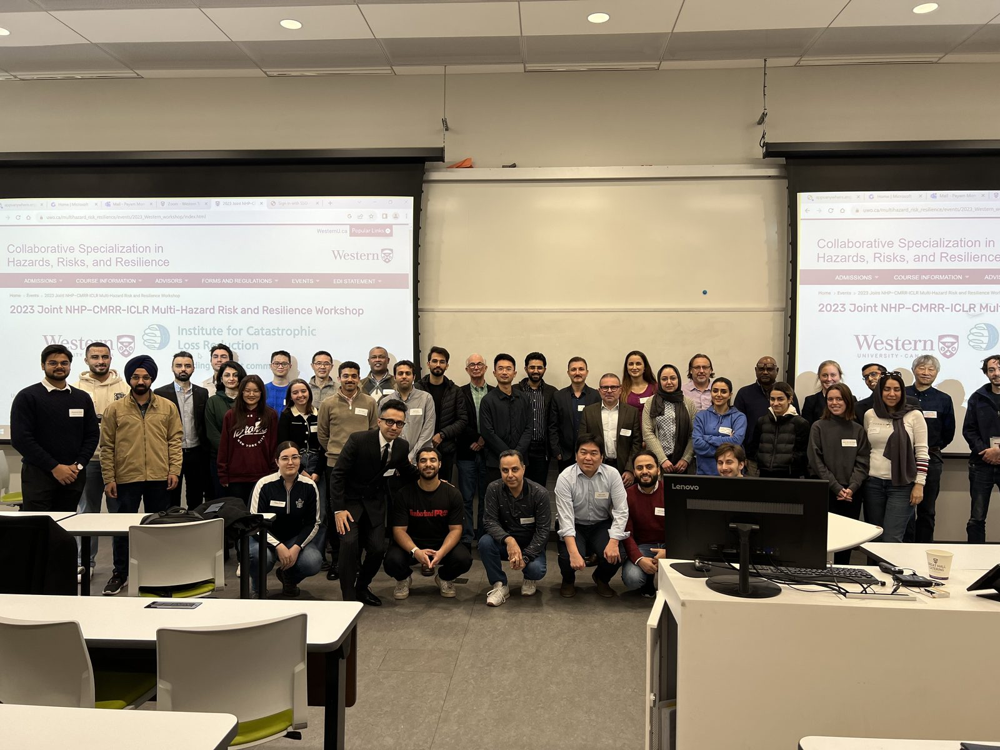
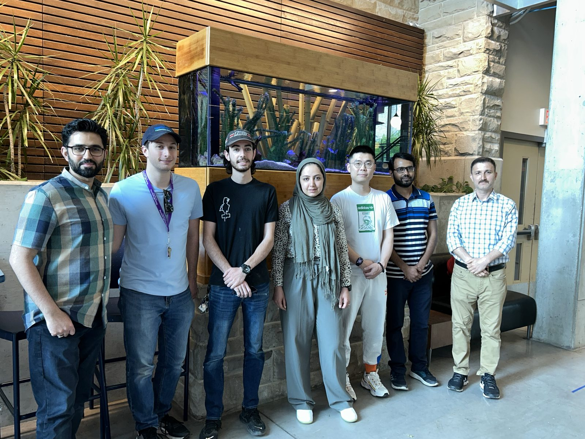